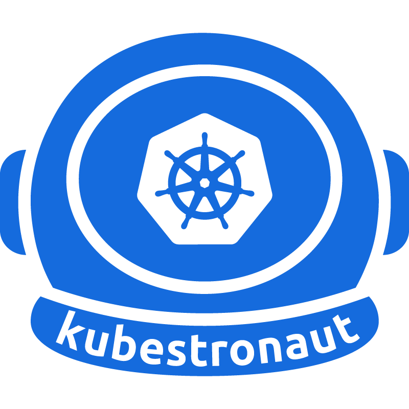
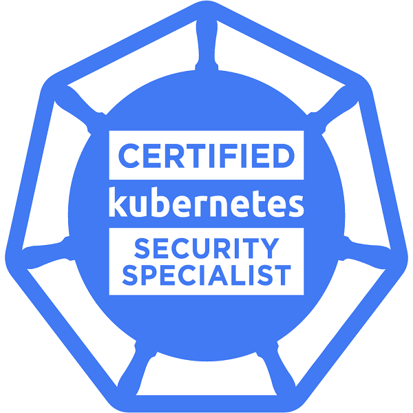
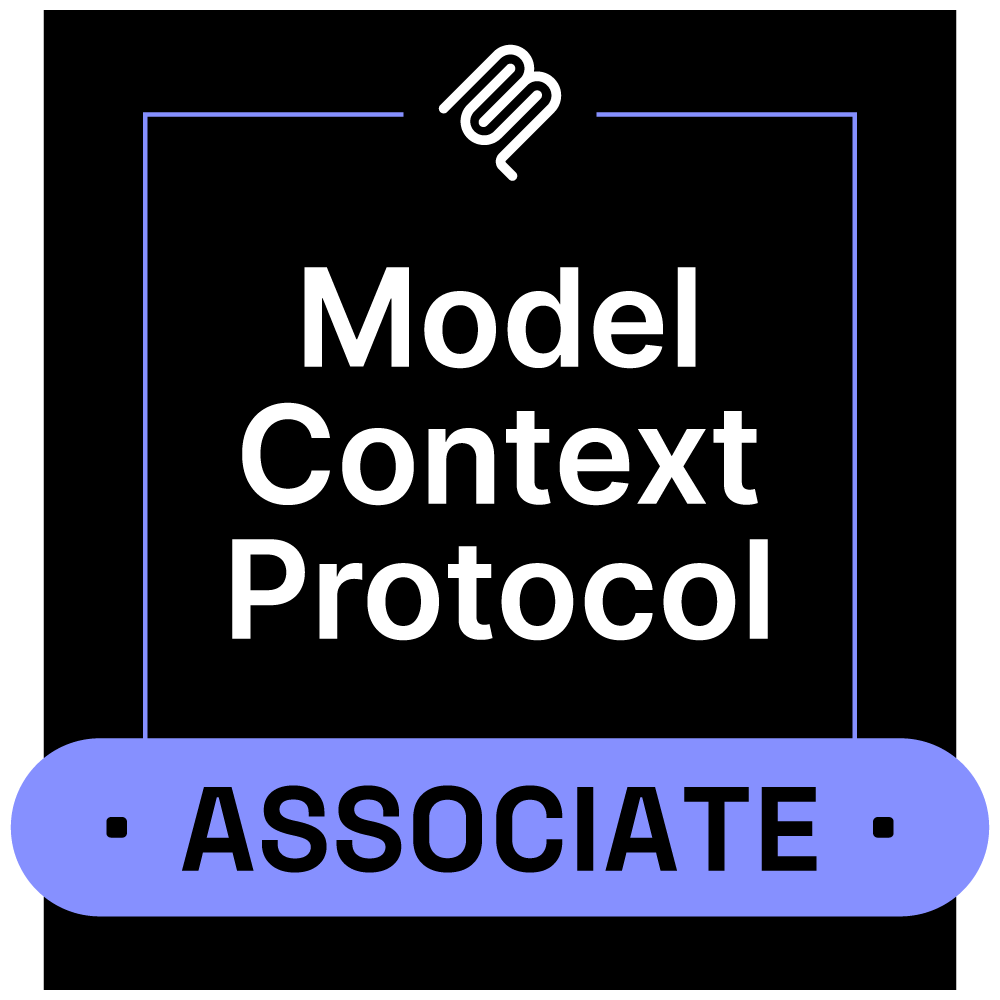
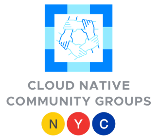
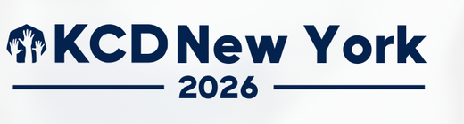

Christopher Tineo
SRE · Palantir Technologies
 CNCF Ambassador
CNCF Ambassador

Kubestronaut
 GCP Cloud Architect
GCP Cloud Architect

 GCP Cloud DevOps
GCP Cloud DevOps

CKS
MCPA




 OpenSSF · 16 sep 2026
OpenSSF · 16 sep 2026
Anthropic · Project Glasswing
"…some have even asked us to slow down our rate of our disclosures because they need more time to design patches." (traducción propia)
75 de 530 bugs altos/críticos ya tenían patch al publicar